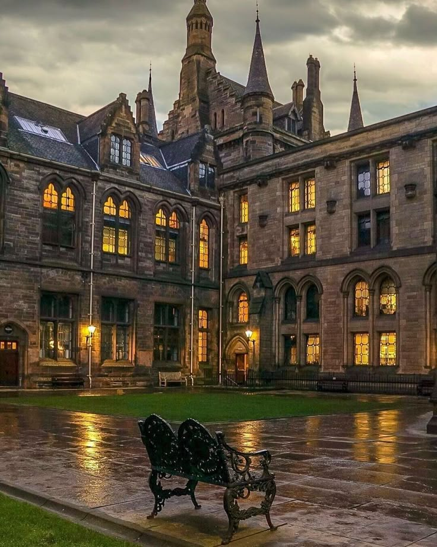
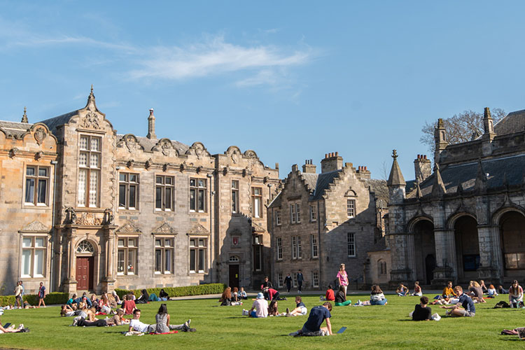

Fundada en 1413, la Universidad de St Andrews es la más antigua de Escocia y una de las más prestigiosas del Reino Unido
La Universidad de Edimburgo es una institución de prestigio mundial, reconocida por su investigación, innovación y su histórico campus
Establecida en 1451, la Universidad de Glasgow es una de las mejores del Reino Unido, destacándose por su excelencia académica y su vibrante vida estudiantil
Si estás pensando en estudiar en el extranjero, Escocia es una opción increíble. Tiene universidades de primer nivel, una vida estudiantil muy activa y paisajes que parecen sacados de una película. Además, es un lugar lleno de historia, con gente amable y muchas oportunidades para crecer profesionalmente. Ya sea que te interese la tecnología, la investigación o simplemente vivir una experiencia diferente, Escocia puede ser el destino perfecto para vos
El sistema educativo en Escocia es más flexible, práctico y basado en la investigación que en otros países. Si te gusta aprender de forma independiente y explorar distintas materias antes de especializarte, Escocia es una gran opción para vos
Escocia fomenta el pensamiento crítico y la independencia.
Hay menos "guiado paso a paso" y se espera que el estudiante investigue por su cuenta.
Muchas carreras incluyen proyectos de investigación en los últimos años.
Ejemplo: Si estudias Historia, en lugar de solo memorizar fechas, escribirás ensayos analizando eventos y debatiendo interpretaciones.
Las universidades escocesas combinan diferentes tipos de aprendizaje:


Educación secundaria completa
Nivel de inglés
Se requiere un examen oficial como:
Requisitos específicos (según la carrera)
Carreras como Medicina o Ingeniería pueden pedir exámenes adicionales o entrevistas.
Aplicación a través de UCAS
UCAS (Universities and Colleges Admissions Service) es el sistema centralizado para postular a universidades en el Reino Unido.
Consejo: Revisá siempre los requisitos específicos en la página de la universidad a la que querés aplicar, ya que pueden variar según la institución y el programa